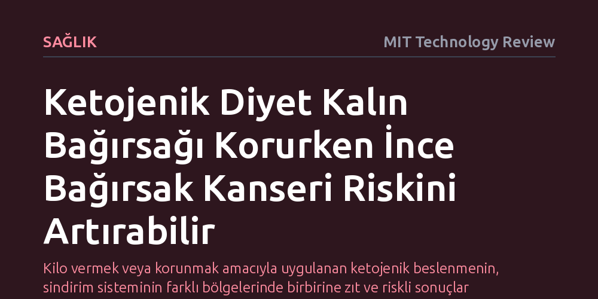

SAGLIK · MIT Technology Review · 2026-10-21
Fareler üzerinde yürütülen yeni bir araştırma, ketojenik diyetin kalın bağırsak kanserine karşı koruma sağlarken ince bağırsakta tümör riskini artırdığını gösterdi. Yağ asidi oksidasyonunun kök hücre çoğalmasını hızlandırarak ince bağırsakta tümör gelişimini tetiklediği belirlendi.
Kilo vermek veya korunmak amacıyla uygulanan ketojenik beslenmenin, sindirim sisteminin farklı bölgelerinde birbirine zıt ve riskli sonuçlar doğurabileceğini gösterir.

Yüksek yağ ve oldukça düşük karbonhidrat tüketimine dayanan ketojenik beslenme, son yıllarda kilo kontrolünden metabolik sağlığa kadar pek çok alanda popüler bir tercih haline geldi. Hatta önceki bazı bilimsel çalışmalar, bu tür bir beslenme modelinin kalın bağırsak (kolon) kanserine karşı koruyucu bir kalkan oluşturabileceğini öne sürüyordu. Ancak sindirim kanalının bir bölümü için faydalı görünen biyokimyasal değişimlerin, hemen komşu dokularda nasıl bir karşılık bulduğu sorusu uzun süre yanıtsız kalmıştı.
Massachusetts Teknoloji Enstitüsü (MIT) Kök Hücre Girişimi Direktörü Ömer Yılmaz ve ekibi, ketojenik diyetin ince bağırsak üzerindeki etkilerini mercek altına aldı. Fareler üzerinde yürütülen deneyler, kolon kanseri için gözlemlenen koruyucu etkinin ince bağırsakta geçerli olmadığını ortaya koydu. Aksine, ketojenik beslenen farelerin ince bağırsaklarında tümör geliştirme ihtimalinin standart diyetle beslenenlere kıyasla belirgin biçimde arttığı tespit edildi.
Araştırmacılar, ince bağırsaktaki tümör artışının ardında yatan hücresel dinamikleri incelediklerinde doğrudan enerji üretim mekanizmasına ulaştı. Karbonhidrat kısıtlandığında bağırsak hücreleri yakıt olarak besin yoluyla alınan yağ asitlerini yakmaya yöneliyor. 'Yağ asidi oksidasyonu' adı verilen bu metabolik yolak, hücre içi proteinleri uyararak kök hücrelerin olağandışı bir hızla bölünmesini sağlayan sinyal zincirlerini tetikliyor.
Kök hücrelerin bu denli aktifleşmesi aslında iki ucu keskin bir kılıç niteliğinde. Ömer Yılmaz, "Daha fazla kök hücreye sahip olmak ince bağırsak hasar gördüğünde dokunun kendini daha iyi onarmasını sağlar; ancak madalyonun diğer yüzünde, aşırı aktif kök hücrelerin tümör oluşumuna yol açabilmesi yer alır" sözleriyle durumu özetliyor. Doku yenilenmesini hızlandıran bu metabolik mekanizma, kontrolsüz hücre çoğalmasının kapısını aralayarak kanser riskini tırmandırıyor.
Ketojenik diyetin kalın bağırsak üzerindeki tümör baskılayıcı etkisi ilk keşfedildiğinde, bilim dünyasının odağında karaciğerin ürettiği keton cisimcikleri yer alıyordu. Özellikle kanda seviyesi yükselen beta-hidroksibütirat (BHB) molekülünün kolon kanserini engelleyen temel faktör olduğu düşünülmekteydi. Yılmaz ve ekibinin son çalışması ketojenik diyetin kolondaki tümör gelişimini gerçekten baskıladığını bir kez daha doğruladı; ancak sürecin mekanizmasına dair yerleşik kanıyı kökten sarstı.
Elde edilen yeni bulgular, keton cisimciklerinin kolon tümörlerini baskılamada sanıldığı gibi aktif bir rol oynamadığını gösterdi. Yapılan biyokimyasal incelemeler bu moleküllerin koruyucu mekanizmanın doğrudan faili olmadığını kanıtladı. Araştırmacılar, keton cisimciklerinin yağ yakımı sırasında ortaya çıkan birer yan üründen ibaret olduğunu ve biyolojik süreçte sadece metabolik birer seyirci olarak kaldıklarını ifade ediyor.
Bu çalışmanın sunduğu en temel çıkarım, tek bir beslenme modelinin tüm vücut ve sindirim kanalı üzerinde yeknesak bir tesir bırakamayacağı gerçeğidir. Karbonhidratları neredeyse tamamen kesip yüksek miktarda yağa yönelmek, kalın bağırsak dokusunda olumlu sonuçlar üretirken ince bağırsağın hücresel dengelerini tehlikeye atabilmektedir.
Beslenme modellerinin ve klinik diyetlerin, genel kavramlar yerine organ ve doku düzeyindeki özgül metabolik yanıtlar gözetilerek değerlendirilmesi gerekiyor. Kilo vermek veya belli hastalıklardan korunmak adına yapılan sert diyet değişikliklerinin, vücudun diğer bölümlerinde henüz keşfedilmemiş hücresel maliyetler barındırabileceği göz ardı edilmemelidir.